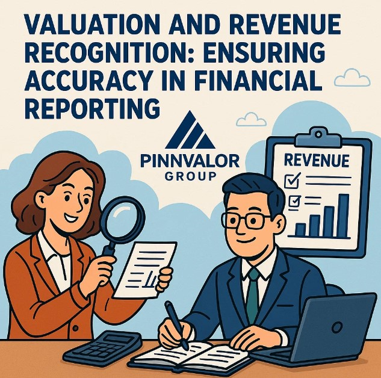

Valuation and Revenue Recognition: Ensuring Accuracy in Financial Reporting
In the world of financial reporting, two concepts play a central role in determining how a company presents its financial health and performance: valuation and revenue recognition. These principles directly impact key financial statements and influence the decisions of investors, lenders, regulators, and other stakeholders. Accurate application of these principles is not just a matter of compliance—it’s vital for building trust and credibility in the marketplace.
Are your valuation and revenue recognition practices truly reflecting your company’s financial reality?
Inaccurate valuations can mislead stakeholders and distort earnings, while premature or delayed revenue recognition can obscure a company’s true performance. Precision in these areas is essential for transparency and credibility.
Understanding Valuation in Financial Reporting
What Is Valuation?
Valuation refers to the process of determining the current worth of an asset, liability, or an entire business. In financial reporting, valuation methods are applied to a wide range of items including:
- Inventories
- Investments
- Property, plant, and equipment
- Intangible assets like goodwill
- Financial instruments
Common Valuation Bases
- Historical Cost:
Assets are recorded based on their original purchase price. This method offers reliability but may not reflect current market value. - Fair Value:
Reflects the price at which an asset could be sold in an orderly transaction. Fair value provides more relevance but can introduce volatility and subjectivity. - Net Realizable Value:
Used primarily for inventories, it's the estimated selling price minus the cost of completion and selling. - Value in Use:
Focuses on the present value of future cash flows expected from an asset, commonly used in impairment testing.
Why Valuation Matters
Inaccurate valuations can lead to misleading financial statements, distorted earnings, and ultimately, poor decision-making. Overstating asset values can inflate a company’s financial position, while understating them can reduce investor confidence and undervalue the business.
The Importance of Revenue Recognition
What Is Revenue Recognition?
Revenue recognition refers to the accounting principle that determines the specific conditions under which income becomes realized and earned. Under accrual accounting, revenue is recognized when it is earned, regardless of when cash is received.
The Five-Step Model under IFRS 15 / ASC 606
Modern revenue recognition standards—such as IFRS 15 and ASC 606—introduce a five-step framework:
- Identify the contract with a customer
- Identify the performance obligations in the contract
- Determine the transaction price
- Allocate the transaction price to the performance obligations
- Recognize revenue when (or as) the entity satisfies a performance obligation
Key Considerations
- Timing: Revenue must be recognized at the right time—neither prematurely nor too late.
- Estimates: Significant judgment may be required in estimating variable consideration, assessing collectability, or measuring progress.
- Disclosures: Transparent reporting of revenue streams is essential for stakeholder confidence.

Challenges in Valuation and Revenue Recognition
Valuation Challenges
- Volatility in market prices (especially for financial instruments)
- Impairment testing complexities
- Subjective assumptions in fair value models
- Frequent changes in regulatory guidance
Revenue Recognition Challenges
- Complex contract arrangements (e.g., multi-element contracts)
- Industry-specific nuances (e.g., software, construction, telecom)
- Estimating future performance or satisfaction of obligations
- Managing aggressive revenue practices without breaching standards
The Role of Internal Controls and Auditors
Robust internal controls are crucial to ensure the accuracy of valuation and revenue recognition. This includes:
- Proper authorization and documentation of transactions
- Regular impairment testing and fair value reassessments
- Reconciliation of sales, billing, and cash collections
- Ongoing monitoring of contracts and delivery obligations
Auditors, both internal and external, play a vital role in evaluating whether these accounting treatments are consistent with applicable financial reporting frameworks. They also assess whether management’s judgments are reasonable and adequately disclosed.
Best Practices for Ensuring Accuracy
- Stay Updated on Standards:
Regularly train accounting staff on the latest developments in IFRS, GAAP, and industry-specific guidance. - Use Reliable Valuation Techniques:
Adopt consistent and transparent methodologies for asset valuation, backed by solid evidence and professional judgment. - Implement Strong Policies:
Develop clear policies on revenue recognition, including procedures for reviewing contracts and handling estimates. - Leverage Technology:
Use enterprise resource planning (ERP) and financial reporting tools to automate and monitor critical processes. - Engage Professional Expertise:
Consult with valuation experts and technical accountants for complex or judgment-heavy areas.
Conclusion
Valuation and revenue recognition are not just technical accounting tasks—they are foundational pillars of financial integrity. Getting them right ensures that a company's financial statements are accurate, comparable, and decision-useful. In a world of increasing regulatory scrutiny and investor expectations, the importance of applying these principles diligently cannot be overstated.
As financial reporting continues to evolve, organizations must prioritize transparency, accuracy, and compliance to maintain the trust of stakeholders and the credibility of their financial reporting.